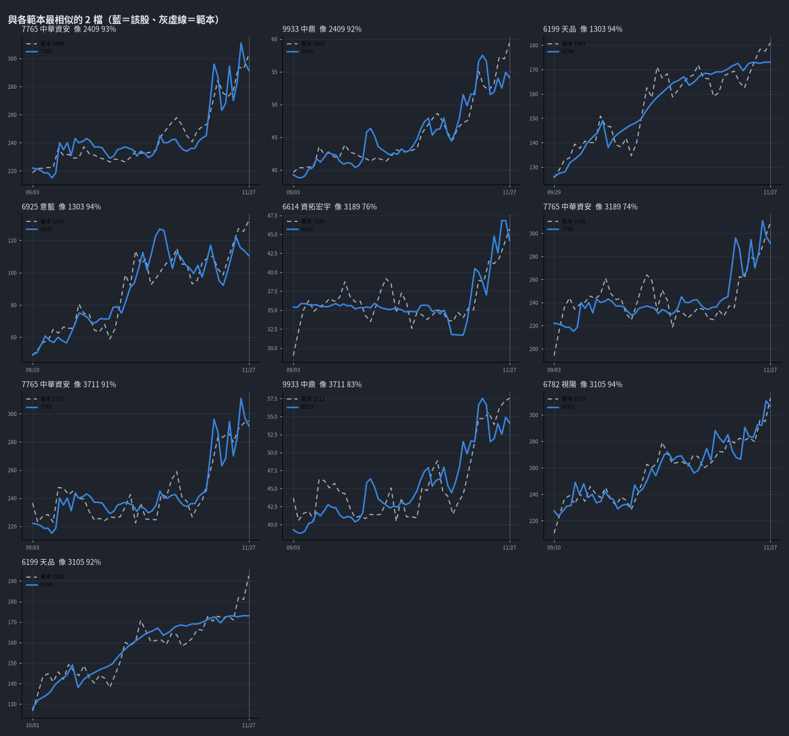

🧭 範本選股 2026-11-27
範本：2409 友達、1303 南亞、3189 景碩、8046 南電、3711 日月光投控、3105 穩懋（08/03～10/02 走勢）｜比對 499 檔｜相似度 70% 以上全部列出
與 2409 友達 相似的有（23 檔）
| # | 代號 | 名稱 | 相似度 | 收盤 | 近10日 | 近2月 | 備註 |
|---|---|---|---|---|---|---|---|
| 1 | 7765 | 中華資安 | 93% | 291.5 | +8.2% | +20.0% | 法人 -281（5日 -424）、量 1.7倍（近10日 19.8倍） |
| 2 | 9933 | 中鼎 | 92% | 54.1 | +4.8% | +31.6% | 法人 +372（5日 -2,240）、量 0.5倍（近10日 3.4倍） |
| 3 | 6140 | 訊達 | 91% | 30.15 | -4.9% | +41.9% | 法人 -1,023（5日 -1,025）、量 2.0倍（近10日 3.3倍） |
| 4 | 6782 | 視陽 | 90% | 306.5 | +7.5% | +27.7% | 法人 +23（5日 +476）、量 0.6倍（近10日 2.1倍） |
| 5 | 1477 | 聚陽 | 87% | 235 | +4.2% | +22.1% | 法人 +465（5日 +2,935）、量 1.6倍（近10日 1.8倍） |
| 6 | 2412 | 中華電 | 87% | 165.5 | +0.3% | +13.7% | 法人 -609（5日 +25,762）、量 1.8倍（近10日 2.9倍） |
| 7 | 8099 | 大世科 | 86% | 146.5 | -19.5% | +142.1% | 法人 -158（5日 +526）、量 1.6倍（近10日 2.6倍） |
| 8 | 3285 | 微端 | 85% | 55.2 | +9.5% | +30.3% | 法人 +24（5日 -11）、量 3.6倍（近10日 7.4倍） |
| 9 | 2597 | 潤弘 | 83% | 192 | +9.1% | +13.9% | 法人 +263（5日 +2,703）、量 1.1倍（近10日 3.4倍） |
| 10 | 2468 | 華經 | 83% | 61.9 | -16.6% | +36.2% | 法人 -34（5日 -6,058）、量 0.5倍（近10日 2.0倍） |
| 11 | 6614 | 資拓宏宇 | 81% | 44.2 | +19.9% | +24.3% | 法人 +15（5日 -271）、量 1.2倍（近10日 40.0倍） |
| 12 | 2471 | 資通 | 80% | 64 | -10.0% | +23.6% | 法人 -803（5日 -2,335）、量 1.0倍（近10日 6.5倍） |
| 13 | 1476 | 儒鴻 | 80% | 369 | -4.5% | +31.3% | 法人 +56（5日 +556）、量 0.5倍（近10日 1.4倍） |
| 14 | 2254 | 巨鎧精密-創 | 80% | 111 | +1.4% | +28.2% | 法人 +217（5日 +479）、量 0.9倍（近10日 1.0倍） |
| 15 | 2466 | 冠西電 | 79% | 361.5 | -8.0% | +218.5% | 法人 +796（5日 -217）、量 1.8倍（近10日 1.2倍） |
| 16 | 6199 | 天品 | 78% | 173 | +2.4% | +41.8% | 法人 -165（5日 +1,772）、量 1.0倍（近10日 1.3倍） |
| 17 | 6148 | 驊宏資 | 78% | 44.85 | -22.8% | +20.1% | 法人 +36（5日 +674）、量 0.4倍（近10日 1.9倍） |
| 18 | 2355 | 敬鵬 | 77% | 59.2 | -10.2% | +42.3% | 法人 -10,151（5日 -11,032）、量 2.1倍（近10日 2.5倍） |
| 19 | 6108 | 競國 | 75% | 31.6 | -22.9% | +37.1% | 法人 +31（5日 -420）、量 0.7倍（近10日 0.9倍） |
| 20 | 6690 | 安碁資訊 | 74% | 192 | -9.4% | +7.6% | 法人 +37（5日 +383）、量 0.7倍（近10日 6.5倍） |
| 21 | 6925 | 意藍 | 73% | 110.5 | +3.8% | +78.2% | 法人 -14（5日 -855）、量 1.8倍（近10日 2.7倍） |
| 22 | 6697 | 東捷資訊 | 73% | 49.9 | -38.1% | +21.3% | 法人 +59（5日 +207）、量 0.1倍（近10日 0.6倍） |
| 23 | 8272 | 全景軟體 | 71% | 77 | -29.4% | +18.8% | 法人 -27（5日 -65）、量 0.4倍（近10日 2.4倍） |
與 1303 南亞 相似的有（29 檔）
| # | 代號 | 名稱 | 相似度 | 收盤 | 近10日 | 近2月 | 備註 |
|---|---|---|---|---|---|---|---|
| 1 | 6199 | 天品 | 94% | 173 | +2.4% | +41.8% | 法人 -165（5日 +1,772）、量 1.0倍（近10日 1.3倍） |
| 2 | 6925 | 意藍 | 94% | 110.5 | +3.8% | +78.2% | 法人 -14（5日 -855）、量 1.8倍（近10日 2.7倍） |
| 3 | 2412 | 中華電 | 93% | 165.5 | +0.3% | +13.7% | 法人 -609（5日 +25,762）、量 1.8倍（近10日 2.9倍） |
| 4 | 2254 | 巨鎧精密-創 | 93% | 111 | +1.4% | +28.2% | 法人 +217（5日 +479）、量 0.9倍（近10日 1.0倍） |
| 5 | 2466 | 冠西電 | 91% | 361.5 | -8.0% | +218.5% | 法人 +796（5日 -217）、量 1.8倍（近10日 1.2倍） |
| 6 | 6782 | 視陽 | 90% | 306.5 | +7.5% | +27.7% | 法人 +23（5日 +476）、量 0.6倍（近10日 2.1倍） |
| 7 | 8099 | 大世科 | 89% | 146.5 | -19.5% | +142.1% | 法人 -158（5日 +526）、量 1.6倍（近10日 2.6倍） |
| 8 | 2355 | 敬鵬 | 87% | 59.2 | -10.2% | +42.3% | 法人 -10,151（5日 -11,032）、量 2.1倍（近10日 2.5倍） |
| 9 | 2468 | 華經 | 86% | 61.9 | -16.6% | +36.2% | 法人 -34（5日 -6,058）、量 0.5倍（近10日 2.0倍） |
| 10 | 6108 | 競國 | 82% | 31.6 | -22.9% | +37.1% | 法人 +31（5日 -420）、量 0.7倍（近10日 0.9倍） |
| 11 | 1477 | 聚陽 | 82% | 235 | +4.2% | +22.1% | 法人 +465（5日 +2,935）、量 1.6倍（近10日 1.8倍） |
| 12 | 6140 | 訊達 | 82% | 30.15 | -4.9% | +41.9% | 法人 -1,023（5日 -1,025）、量 2.0倍（近10日 3.3倍） |
| 13 | 2480 | 敦陽科 | 81% | 175 | -9.6% | +8.7% | 法人 -0（5日 -24）、量 0.2倍（近10日 0.8倍） |
| 14 | 1476 | 儒鴻 | 81% | 369 | -4.5% | +31.3% | 法人 +56（5日 +556）、量 0.5倍（近10日 1.4倍） |
| 15 | 1569 | 濱川 | 81% | 74.3 | -23.6% | +17.4% | 法人 -96（5日 -182）、量 0.1倍（近10日 0.3倍） |
| 16 | 9933 | 中鼎 | 80% | 54.1 | +4.8% | +31.6% | 法人 +372（5日 -2,240）、量 0.5倍（近10日 3.4倍） |
| 17 | 7767 | 仁大資訊 | 79% | 58 | -2.8% | +24.3% | 法人 -266（5日 -811）、量 3.8倍（近10日 6.0倍） |
| 18 | 6148 | 驊宏資 | 79% | 44.85 | -22.8% | +20.1% | 法人 +36（5日 +674）、量 0.4倍（近10日 1.9倍） |
| 19 | 8272 | 全景軟體 | 78% | 77 | -29.4% | +18.8% | 法人 -27（5日 -65）、量 0.4倍（近10日 2.4倍） |
| 20 | 6957 | 裕慶-KY | 76% | 393 | -8.8% | +33.0% | 法人 -127（5日 -648）、量 0.7倍（近10日 0.7倍） |
| 21 | 2465 | 麗臺 | 76% | 110 | -32.1% | +23.3% | 法人 -583（5日 -2,467）、量 0.6倍（近10日 1.6倍） |
| 22 | 6708 | 天擎 | 75% | 64.8 | -27.8% | +66.4% | 法人 -83（5日 -761）、量 0.9倍（近10日 1.5倍） |
| 23 | 6221 | 晉泰 | 74% | 30.3 | -30.1% | -4.1% | 法人 +11（5日 +457）、量 0.3倍（近10日 1.0倍） |
| 24 | 6234 | 高僑 | 73% | 40.05 | -31.4% | +4.8% | 法人 -25（5日 -176）、量 0.3倍（近10日 1.3倍） |
| 25 | 6690 | 安碁資訊 | 73% | 192 | -9.4% | +7.6% | 法人 +37（5日 +383）、量 0.7倍（近10日 6.5倍） |
| 26 | 2471 | 資通 | 72% | 64 | -10.0% | +23.6% | 法人 -803（5日 -2,335）、量 1.0倍（近10日 6.5倍） |
| 27 | 8213 | 志超 | 72% | 36.15 | -13.8% | +9.0% | 法人 -222（5日 -1,328）、量 0.9倍（近10日 0.8倍） |
| 28 | 6697 | 東捷資訊 | 71% | 49.9 | -38.1% | +21.3% | 法人 +59（5日 +207）、量 0.1倍（近10日 0.6倍） |
| 29 | 3285 | 微端 | 71% | 55.2 | +9.5% | +30.3% | 法人 +24（5日 -11）、量 3.6倍（近10日 7.4倍） |
與 3189 景碩 相似的有（4 檔）
| # | 代號 | 名稱 | 相似度 | 收盤 | 近10日 | 近2月 | 備註 |
|---|---|---|---|---|---|---|---|
| 1 | 6614 | 資拓宏宇 | 76% | 44.2 | +19.9% | +24.3% | 法人 +15（5日 -271）、量 1.2倍（近10日 40.0倍） |
| 2 | 7765 | 中華資安 | 74% | 291.5 | +8.2% | +20.0% | 法人 -281（5日 -424）、量 1.7倍（近10日 19.8倍） |
| 3 | 5457 | 宣德 | 72% | 30.1 | +46.1% | +23.4% | 法人 -912（5日 -22）、量 8.4倍（近10日 11.0倍） |
| 4 | 2597 | 潤弘 | 71% | 192 | +9.1% | +13.9% | 法人 +263（5日 +2,703）、量 1.1倍（近10日 3.4倍） |
與 8046 南電 相似的有（0 檔）
| # | 代號 | 名稱 | 相似度 | 收盤 | 近10日 | 近2月 | 備註 |
|---|---|---|---|---|---|---|---|
| 今天沒有 |
與 3711 日月光投控 相似的有（10 檔）
| # | 代號 | 名稱 | 相似度 | 收盤 | 近10日 | 近2月 | 備註 |
|---|---|---|---|---|---|---|---|
| 1 | 7765 | 中華資安 | 91% | 291.5 | +8.2% | +20.0% | 法人 -281（5日 -424）、量 1.7倍（近10日 19.8倍） |
| 2 | 9933 | 中鼎 | 83% | 54.1 | +4.8% | +31.6% | 法人 +372（5日 -2,240）、量 0.5倍（近10日 3.4倍） |
| 3 | 6614 | 資拓宏宇 | 81% | 44.2 | +19.9% | +24.3% | 法人 +15（5日 -271）、量 1.2倍（近10日 40.0倍） |
| 4 | 2597 | 潤弘 | 80% | 192 | +9.1% | +13.9% | 法人 +263（5日 +2,703）、量 1.1倍（近10日 3.4倍） |
| 5 | 2471 | 資通 | 78% | 64 | -10.0% | +23.6% | 法人 -803（5日 -2,335）、量 1.0倍（近10日 6.5倍） |
| 6 | 6782 | 視陽 | 77% | 306.5 | +7.5% | +27.7% | 法人 +23（5日 +476）、量 0.6倍（近10日 2.1倍） |
| 7 | 3285 | 微端 | 74% | 55.2 | +9.5% | +30.3% | 法人 +24（5日 -11）、量 3.6倍（近10日 7.4倍） |
| 8 | 5457 | 宣德 | 73% | 30.1 | +46.1% | +23.4% | 法人 -912（5日 -22）、量 8.4倍（近10日 11.0倍） |
| 9 | 1477 | 聚陽 | 73% | 235 | +4.2% | +22.1% | 法人 +465（5日 +2,935）、量 1.6倍（近10日 1.8倍） |
| 10 | 6140 | 訊達 | 72% | 30.15 | -4.9% | +41.9% | 法人 -1,023（5日 -1,025）、量 2.0倍（近10日 3.3倍） |
與 3105 穩懋 相似的有（20 檔）
| # | 代號 | 名稱 | 相似度 | 收盤 | 近10日 | 近2月 | 備註 |
|---|---|---|---|---|---|---|---|
| 1 | 6782 | 視陽 | 94% | 306.5 | +7.5% | +27.7% | 法人 +23（5日 +476）、量 0.6倍（近10日 2.1倍） |
| 2 | 6199 | 天品 | 92% | 173 | +2.4% | +41.8% | 法人 -165（5日 +1,772）、量 1.0倍（近10日 1.3倍） |
| 3 | 2355 | 敬鵬 | 90% | 59.2 | -10.2% | +42.3% | 法人 -10,151（5日 -11,032）、量 2.1倍（近10日 2.5倍） |
| 4 | 2254 | 巨鎧精密-創 | 89% | 111 | +1.4% | +28.2% | 法人 +217（5日 +479）、量 0.9倍（近10日 1.0倍） |
| 5 | 2466 | 冠西電 | 89% | 361.5 | -8.0% | +218.5% | 法人 +796（5日 -217）、量 1.8倍（近10日 1.2倍） |
| 6 | 2468 | 華經 | 88% | 61.9 | -16.6% | +36.2% | 法人 -34（5日 -6,058）、量 0.5倍（近10日 2.0倍） |
| 7 | 9933 | 中鼎 | 87% | 54.1 | +4.8% | +31.6% | 法人 +372（5日 -2,240）、量 0.5倍（近10日 3.4倍） |
| 8 | 6925 | 意藍 | 86% | 110.5 | +3.8% | +78.2% | 法人 -14（5日 -855）、量 1.8倍（近10日 2.7倍） |
| 9 | 1476 | 儒鴻 | 86% | 369 | -4.5% | +31.3% | 法人 +56（5日 +556）、量 0.5倍（近10日 1.4倍） |
| 10 | 8099 | 大世科 | 85% | 146.5 | -19.5% | +142.1% | 法人 -158（5日 +526）、量 1.6倍（近10日 2.6倍） |
| 11 | 6108 | 競國 | 85% | 31.6 | -22.9% | +37.1% | 法人 +31（5日 -420）、量 0.7倍（近10日 0.9倍） |
| 12 | 6140 | 訊達 | 83% | 30.15 | -4.9% | +41.9% | 法人 -1,023（5日 -1,025）、量 2.0倍（近10日 3.3倍） |
| 13 | 6148 | 驊宏資 | 81% | 44.85 | -22.8% | +20.1% | 法人 +36（5日 +674）、量 0.4倍（近10日 1.9倍） |
| 14 | 7765 | 中華資安 | 78% | 291.5 | +8.2% | +20.0% | 法人 -281（5日 -424）、量 1.7倍（近10日 19.8倍） |
| 15 | 3285 | 微端 | 77% | 55.2 | +9.5% | +30.3% | 法人 +24（5日 -11）、量 3.6倍（近10日 7.4倍） |
| 16 | 7767 | 仁大資訊 | 76% | 58 | -2.8% | +24.3% | 法人 -266（5日 -811）、量 3.8倍（近10日 6.0倍） |
| 17 | 2480 | 敦陽科 | 74% | 175 | -9.6% | +8.7% | 法人 -0（5日 -24）、量 0.2倍（近10日 0.8倍） |
| 18 | 6708 | 天擎 | 73% | 64.8 | -27.8% | +66.4% | 法人 -83（5日 -761）、量 0.9倍（近10日 1.5倍） |
| 19 | 6690 | 安碁資訊 | 73% | 192 | -9.4% | +7.6% | 法人 +37（5日 +383）、量 0.7倍（近10日 6.5倍） |
| 20 | 1569 | 濱川 | 70% | 74.3 | -23.6% | +17.4% | 法人 -96（5日 -182）、量 0.1倍（近10日 0.3倍） |
🚀 可能跟漲（像範本噴出前 85% 以上、近10日還沒大漲）
| # | 代號 | 名稱 | 像哪個範本 | 相似度 | 收盤 | 近10日 | 近2月 | 備註 |
|---|---|---|---|---|---|---|---|---|
| 1 | 2254 | 巨鎧精密-創 | 3105 | 94% | 111 | +1.4% | +28.2% | 法人 +217（5日 +479）、量 0.9倍（近10日 1.0倍） |
| 2 | 6140 | 訊達 | 1303 | 93% | 30.15 | -4.9% | +41.9% | 法人 -1,023（5日 -1,025）、量 2.0倍（近10日 3.3倍） |
| 3 | 1476 | 儒鴻 | 3105 | 92% | 369 | -4.5% | +31.3% | 法人 +56（5日 +556）、量 0.5倍（近10日 1.4倍） |
| 4 | 6199 | 天品 | 1303 | 91% | 173 | +2.4% | +41.8% | 法人 -165（5日 +1,772）、量 1.0倍（近10日 1.3倍） |
| 5 | 9933 | 中鼎 | 3105 | 90% | 54.1 | +4.8% | +31.6% | 法人 +372（5日 -2,240）、量 0.5倍（近10日 3.4倍） |
| 6 | 2468 | 華經 | 1303 | 89% | 61.9 | -16.6% | +36.2% | 法人 -34（5日 -6,058）、量 0.5倍（近10日 2.0倍） |
| 7 | 2466 | 冠西電 | 1303 | 88% | 361.5 | -8.0% | +218.5% | 法人 +796（5日 -217）、量 1.8倍（近10日 1.2倍） |
| 8 | 8099 | 大世科 | 3105 | 87% | 146.5 | -19.5% | +142.1% | 法人 -158（5日 +526）、量 1.6倍（近10日 2.6倍） |
| 9 | 7704 | 明遠精密 | 8046 | 87% | 54.8 | -31.8% | -11.5% | 法人 -41（5日 -161）、量 0.1倍（近10日 0.4倍） |
| 10 | 2471 | 資通 | 3105 | 87% | 64 | -10.0% | +23.6% | 法人 -803（5日 -2,335）、量 1.0倍（近10日 6.5倍） |
| 11 | 1477 | 聚陽 | 2409 | 87% | 235 | +4.2% | +22.1% | 法人 +465（5日 +2,935）、量 1.6倍（近10日 1.8倍） |
| 12 | 7765 | 中華資安 | 3105 | 87% | 291.5 | +8.2% | +20.0% | 法人 -281（5日 -424）、量 1.7倍（近10日 19.8倍） |
| 13 | 2412 | 中華電 | 1303 | 86% | 165.5 | +0.3% | +13.7% | 法人 -609（5日 +25,762）、量 1.8倍（近10日 2.9倍） |
| 14 | 6148 | 驊宏資 | 1303 | 85% | 44.85 | -22.8% | +20.1% | 法人 +36（5日 +674）、量 0.4倍（近10日 1.9倍） |
📏 歷史驗證（之後 10 天）
| 範本 | 案例數 | 平均 | 上漲機率 | 漲超過10% | 全市場平均 | 全市場上漲 | 全市場漲超過10% |
|---|---|---|---|---|---|---|---|
| 2409 友達 | 1211 | +4.8% | 56% | 27% | +1.8% | 50% | 19% |
| 1303 南亞 | 1625 | +4.6% | 54% | 28% | +1.8% | 50% | 19% |
| 3189 景碩 | 2 | +13.3% | 50% | 50% | +1.8% | 50% | 19% |
| 8046 南電 | 41 | +1.4% | 59% | 12% | +1.8% | 50% | 19% |
| 3711 日月光投控 | 0 | — | — | — | — | — | — |
| 3105 穩懋 | 1445 | +3.0% | 51% | 25% | +1.8% | 50% | 19% |

